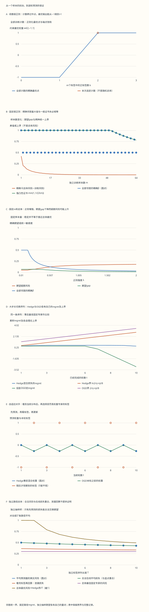

本页目录
统计学习 IV · 稳定性、正则化与在线学习
前置：风险与独立抽样、凸函数与强凸性、条件期望。目标：证明替换一个样本如何控制期望泛化差，逐轮核对 Hedge 与 OGD 的 regret，再明确补上从在线预测到批量学习所需的抽样条件。
1. 先换一条数据：一次变化与统一上界相差什么？
先把一个小模型完全算清，再证明一般结论。
模型输出一个权重 \(w\in[-1,1]\)，标签 \(y\in\{-1,1\}\)，损失为 \(\ell(w,y)=(1-yw)/2\)。它在 \([0,1]\) 内，对 \(w\) 是凸函数，Lipschitz 常数为 \(L=1/2\)。这里的损失是线性混合损失，不是把 \(w\) 直接取符号后的分类错误率。
对 \(m\) 个标签，记均值为 \(\bar y\)。在平均训练损失上加正则项 \(\lambda w^2/2\)，得到 \(F_S(w)=(1-\bar y w)/2+\lambda w^2/2\)。其无约束最优点是 \(\bar y/(2\lambda)\)，超出区间时投影回最近端点：
\(A(S)=\operatorname{clip}\bigl(\bar y/(2\lambda),-1,1\bigr)\)。
例如 \(m=2\)、\(\lambda=0.01\)。正标签数 \(k=0,1,2\) 时，三个输出依次为 \(-1,0,1\)。单条标签翻转使计数相差一；相邻输出的距离为 \(1\)，两个测试标签上的损失变化都是 \(1/2\)。枚举这两个相邻关系，就覆盖了这个模型的全部训练集替换。
若换成 \(m=3\)、同样很小的正则，\(k=1\) 和 \(k=2\) 的输出直接从 \(-1\) 跳到 \(+1\)，损失变化达到 \(1\)。所以不能从一个温和的邻居例子，推断所有邻居都温和。实验保留零概率训练计数，因为统一稳定性是对声明域上所有数据集的要求，不只检查当前分布常出现的数据。
这个例子也说明，精确最大敏感度未必随样本数逐点下降：不同奇偶计数网格会跨过不同的最优点。一般证书随样本数下降，不会强迫被它上界的精确值也单调。
无脚本对照：六份完整记录保存所有训练计数及邻居、逐轮在线损失与势函数、全部独立标签路径。稳定性部分的有理数精确保存；指数权重与对数使用数值近似。

| 预设 | m | 精确统一β | E gap | E超额风险 | Hedge regret | Hedge理论界 |
|---|---|---|---|---|---|---|
| default | 8 | 0.125 | 0.0525 | 0.12 | 0.400249511 | 1.8102676 |
| even-weak | 2 | 0.5 | 0.21 | 0.12 | 0.400249511 | 1.8102676 |
| odd-weak | 3 | 1 | 0.1764 | 0.0864 | 0.400249511 | 1.8102676 |
| strong | 8 | 0.03125 | 0.013125 | 0.18 | 0.400249511 | 1.8102676 |
| adaptive | 8 | 0.125 | 0.0525 | 0.12 | 0.670677955 | 1.9477676 |
| fast | 8 | 0.125 | 0.0525 | 0.12 | 0.499954602 | 2.84657359 |
下载六份完整记录。每个总体概率的分子、分母和每轮预测时间顺序均保留。选择一行训练计数不会改变总体分布；固定在线序列也不能替代独立抽样实验。
2. 强凸性怎样给出统一稳定性？
先看一般形式。设决策域 \(\mathcal W\) 凸，损失 \(\ell(\cdot,z)\) 凸且为 \(L\)-Lipschitz，\(\lambda>0\)，最小值存在。算法最小化
设 \(S^{(i)}\) 把第 \(i\) 个样本换成 \(z_i'\)，并记 \(w=A(S)\)、\(w'=A(S^{(i)})\)、\(d=\|w-w'\|\)。两个目标都 \(\lambda\)-强凸，因此最优性给出 \(F_S(w')-F_S(w)\ge\lambda d^2/2\) 与 \(F_{S^{(i)}}(w)-F_{S^{(i)}}(w')\ge\lambda d^2/2\)。
把两式相加，正则项以及未被替换的样本项全部抵消，得到
\(\lambda d^2\le m^{-1}\{\ell(w',z_i)-\ell(w,z_i)+\ell(w,z_i')-\ell(w',z_i')\}\le 2Ld/m\)。
若 \(d=0\) 已经成立；若 \(d>0\)，除以 \(\lambda d\)，得到 \(d\le2L/(\lambda m)\)。再对任意测试点使用 Lipschitz 性：
\(\sup_z|\ell(A(S),z)-\ell(A(S^{(i)}),z)|\le\beta_m:=2L^2/(\lambda m)\)。
这是真正的统一声明：对任意训练集、任意替换位置、任意替换值和任意测试点都成立。在约束域边界，最优点的普通梯度未必为零；强凸最优性不等式仍可使用。实验同时保存梯度和端点位置，便于核对这一点。
本例 \(L=1/2\)，所以一般证书是 \(1/(2\lambda m)\)。损失范围另外给出上界 \(1\)，可以取两者较小值。实验还有一条更紧的“精确 \(\beta\)”：枚举全部相邻计数与两个测试标签，求真正的最大敏感度。两条都是统一上界，但只有后者针对这个小模型求到了精确最大值。
3. 全部训练集怎样压缩成一张二项表？
现在声明总体分布：\(P(Y=+1)=p\)，\(P(Y=-1)=1-p\)。独立抽取 \(m\) 个标签，正标签计数 \(K\) 的概率为 \(\binom mk p^k(1-p)^{m-k}\)。算法与损失都只依赖计数，因此可按计数合并；二项重数不能遗漏。
本页 \(p\) 是百分数，概率分子保存为 \(\binom mk P^k(100-P)^{m-k}\)，共同分母为 \(100^m\)。每个最优权重、训练风险、总体风险和 gap 都用约分后的有理数保存，页面小数仅用于显示。
总体均值是 \(\mu=2p-1\)。对任意固定 \(w\)，总体风险为 \(L_{\mathcal D}(w)=(1-\mu w)/2\)；训练风险为 \(L_S(w)=(1-\bar y w)/2\)。因此当前模型的 gap 是 \(w(\bar y-\mu)/2\)，它可以是正数，也可以是负数。
控件中的“当前正标签数”只选择一行供观察；改变它不会改变二项分布。总体期望则把全部行按概率加权。一行的 gap、gap 的期望、绝对 gap 的期望，是三个不同的数。
4. 稳定性到期望泛化：把训练点与独立点交换
定义 \(G(S)=L_{\mathcal D}(A(S))-L_S(A(S))\)。设 \(S\sim\mathcal D^m\)，\(z_i'\sim\mathcal D\) 独立于训练集。把 \((z_i,z_i')\) 交换，不改变其联合分布，所以
\(\mathbb E_{S,z_i'}\ell(A(S),z_i')=\mathbb E_{S,z_i'}\ell(A(S^{(i)}),z_i)\)。
于是把总体风险对每个 \(i\) 都写一遍，再与训练平均相减：
括号里的两个算法输出来自相邻训练集，而测试点保持为 \(z_i\)。统一稳定性给出每一项的绝对值至多 \(\beta_m\)，因此 \(|\mathbb E G(S)|\le\beta_m\)。
注意绝对值在期望外面。证明没有得到 \(\mathbb E|G(S)|\le\beta_m\)，更没有得到每个训练集上 \(|G(S)|\le\beta_m\)。实验把这些量分列，避免正负抵消被误当成逐样本保证。
算法可以根据训练集选择输出，但必须在使用该结论前说明其统一稳定性。这里用确定性、可测算法表述；随机算法还须说明内部随机性的耦合与稳定性定义。时间依赖或分布漂移的数据不能直接使用这次独立交换。
5. 从期望到高概率：定义中的“替换”不能换成“删除”
若损失在 \([0,1]\) 内，替换一条数据使总体风险最多变化 \(\beta_m\)。训练风险的变化可拆成“同一组训练点上模型改变”与“一个被替换的损失项改变”，上界为 \(\beta_m+1/m\)。所以 \(G(S)\) 的有界差分常数可取 \(2\beta_m+1/m\)。
应用 McDiarmid 并接上 \(\mathbb E G\le\beta_m\)，以至少 \(1-\delta\) 的概率，
\(G(S)\le\beta_m+(2m\beta_m+1)\sqrt{\ln(1/\delta)/(2m)}\)。
这是一侧 gap 的保证；若要同时控制两侧，可分别分配失败概率。右边很大时，结合风险范围作截断是合法的，但截断后的数不是模型预测错误率。本例分别将一般证书与精确统一 \(\beta\) 代入，并枚举各自的真实失败概率。
Bousquet与Elisseeff的原始论文，定义6与定理12 使用删除一个样本的稳定性约定。先转成替换约定会引入系数，所以不能看到同名定理就照抄其中的常数。本页上式直接从替换定义推导。
这条初等集中界也不是稳定性理论的终点。Feldman与Vondrák的工作 和 Bousquet、Klochkov与Zhivotovskiy的后续结果 改善了高概率保证。继续读这些论文时，重点看它们怎样处理弱相关项、改善简单有界差分带来的代价；本页实验仍只把已经完整推导的界作为证书。
6. 正则越强越稳定，为何风险仍可能上升？
稳定性控制算法对样本的敏感度，并不要求算法拟合得好。一个永远输出 \(w=0\) 的算法完全稳定，本例却始终损失 \(1/2\)；当 \(p\) 很偏时，它明显不如正确的固定端点。
对任意在抽样前固定的比较点 \(u\)，正则化最优性给出 \(L_S(A(S))+\lambda\|A(S)\|^2/2\le L_S(u)+\lambda\|u\|^2/2\)。取期望并加入稳定性项：
\(\mathbb E L_{\mathcal D}(A(S))-L_{\mathcal D}(u)\le\beta_m+\frac{\lambda}{2}\bigl(\|u\|^2-\mathbb E\|A(S)\|^2\bigr)\le\beta_m+\lambda\|u\|^2/2\)。
第一项随正则增强而下降，最后一项却会增大。本例总体最优风险为 \((1-|\mu|)/2\)，比较点可取最优端点。用一般证书得到超额风险上界 \(1/(2\lambda m)+\lambda/2\)；取 \(\lambda=1/\sqrt m\) 时为 \(1/\sqrt m\)。这个选择是关于样本量的预先规则，不是事后看完风险表挑出的免费最优参数。
当 \(\lambda\ge1/2\) 时，所有计数的无约束最优点都在区间内，可进一步精确计算：\(\mathbb E G=p(1-p)/(\lambda m)\)，而期望超额风险为 \(|\mu|/2-\mu^2/(4\lambda)\)。默认 \(p=0.7,\lambda=0.5,m=8\) 给出 \(\mathbb E G=0.0525\)、期望超额风险 \(0.12\)；把 \(\lambda\) 改为 \(2\)，前者降到 \(0.013125\)，后者升到 \(0.18\)。
7. 换一个问题：没有分布时，在线预测能保证什么？
现在暂时放下训练集总体。每轮开始，学习者根据过去的信息选分布 \(p_t\)；随后看到完整损失向量 \(\ell_t\in[0,1]^K\)，付出混合损失 \(\widehat\ell_t=\langle p_t,\ell_t\rangle\)，再更新。
本页使用两个固定专家 \(w=-1,+1\)。正负标签产生互补的零一专家损失；平局预设给两位专家各 \(1/2\)。混合权重 \(w_t=p_{t,+}-p_{t,-}\) 恰使线性损失等于混合损失。
比较基准是整条序列结束后最好的固定专家：
\(\operatorname{Reg}_T=\sum_{t=1}^T\langle p_t,\ell_t\rangle-\min_k\sum_{t=1}^T\ell_{t,k}\)。
它与每轮都选当轮最好专家的动态先知不同。动态先知查看了本轮答案，其总损失通常更低；本页没有对它作同样的 regret 承诺。
损失序列可以自适应地依赖已经公布的预测分布。“惩罚高权重专家”预设就是这样构造的。路径上的代数证明仍成立，不需要独立同分布。这里直接支付确定性的混合损失；若实际随机抽取一个专家行动，单次抽样损失还会有随机波动，不能直接把混合损失账本当作它的逐路径值。
8. Hedge的势函数：每轮只花一个Hoeffding代价
令初始权重 \(q_{1,k}=1/K\)，固定 \(\eta>0\)。用 \(p_{t,k}=q_{t,k}/W_t\)、\(W_t=\sum_kq_{t,k}\)，并更新 \(q_{t+1,k}=q_{t,k}e^{-\eta\ell_{t,k}}\)。于是 \(W_{t+1}/W_t=\sum_kp_{t,k}e^{-\eta\ell_{t,k}}\)。
把专家索引看作按 \(p_t\) 抽取的临时随机变量，Hoeffding 引理给出 \(\log(W_{t+1}/W_t)\le-\eta\widehat\ell_t+\eta^2/8\)。这是对已给定损失向量的确定性不等式，不要求在线数据来自随机总体。
定义 mix loss \(m_t=-\eta^{-1}\log(W_{t+1}/W_t)\)。Jensen 与 Hoeffding 共同给出 \(0\le\widehat\ell_t-m_t\le\eta/8\)。实验逐轮保存这段差与允许的上界。
另一方面，最佳固定专家的最终权重给出 \(W_{T+1}\ge K^{-1}\exp(-\eta\min_k\sum_t\ell_{t,k})\)。对数势函数求和，结合 \(W_1=1\)：
\(\operatorname{Reg}_T\le\ln K/\eta+\eta T/8\)。
已知 horizon \(T\) 时，最小化右侧得到 \(\eta=\sqrt{8\ln K/T}\)，上界 \(\sqrt{T\ln K/2}\)。实验控件中的固定 \(\eta\) 不必等于这个值，表中同时保留理论最优值。未知 horizon 或逐轮改变步长时，需要相应的新证明，不能原样套用固定步长推导。
数值实现使用对数权重避免下溢；独立检查则直接乘指数权重，从另一条计算路线核对每轮概率、势函数和 regret。
9. OGD：投影为何不会破坏势函数？
在凸决策域 \(\mathcal W\) 上，在线梯度下降先用 \(w_t\) 预测，观察凸损失 \(f_t\) 后取次梯度 \(g_t\)，再更新 \(w_{t+1}=\Pi_{\mathcal W}(w_t-\eta g_t)\)。固定比较点 \(u\in\mathcal W\)，投影的距离不增性质给出
\(\|w_{t+1}-u\|^2\le\|w_t-u\|^2-2\eta\langle g_t,w_t-u\rangle+\eta^2\|g_t\|^2\)。
凸性又给出 \(f_t(w_t)-f_t(u)\le\langle g_t,w_t-u\rangle\)。移项后逐轮求和，距离平方望远镜抵消。若域直径至多 \(D\)、次梯度范数至多 \(G\)，就有 \(\operatorname{Reg}_T\le D^2/(2\eta)+\eta G^2T/2\)。
本例 \(\mathcal W=[-1,1]\)、\(g_t=-y_t/2\)，故 \(D=2,G=1/2\)，得到 \(2/\eta+\eta T/8\)。在线线性损失的最佳固定域内点可以取端点，因此与两专家的固定 comparator 一致。表中对最终 comparator 核对每轮距离平方、损失差和势函数上界。
OGD和Hedge可能给出不同的事前权重、损失与上界。它们共享在线协议，不能因为用了同一个步长控件，就把两种算法的证明常数混用。
Regret还可以为负。大步长预设取 \(\eta=2\)，先五个正标签再五个负标签；OGD从零开始，累计损失为 \(2\)，而两位固定专家各损失 \(5\)，所以 regret 为 \(-3\)。这表示会随时间改变的预测器在这条路径上胜过了所有固定比较点，并没有得到负的损失，也没有违背上界。
10. Online-to-batch：补上独立抽样，才跨到总体风险
现在额外假设 \(Z_1,\ldots,Z_T\) 独立同分布，且 \(w_t\) 只依赖前 \(t-1\) 个样本。条件于过去的信息，\(w_t\) 已固定，而本轮样本仍来自原分布，因此 \(\mathbb E[\ell(w_t,Z_t)\mid Z_1,\ldots,Z_{t-1}]=L_{\mathcal D}(w_t)\)。
令 \(\bar w=T^{-1}\sum_tw_t\)。若损失对权重凸，Jensen 给出 \(L_{\mathcal D}(\bar w)\le T^{-1}\sum_tL_{\mathcal D}(w_t)\)。取期望并应用前一行的条件期望等式：
\(\mathbb E L_{\mathcal D}(\bar w)\le\mathbb E[T^{-1}\sum_t\ell(w_t,Z_t)]\)。
对抽样前固定的总体比较点 \(u\)，有 \(\mathbb E[T^{-1}\sum_t\ell(u,Z_t)]=L_{\mathcal D}(u)\)。再加入在线 regret 上界 \(B_T\)，得到 \(\mathbb E L_{\mathcal D}(\bar w)-L_{\mathcal D}(u)\le B_T/T\)。不要求输出平均时，也可研究随机选一轮的输出，但其随机性与结论要另行说明。在线学习综述，第5章定理5.1和推论5.2 给出了这座桥梁。
本例损失恰为线性，所以 Jensen 这一步取等号。实验枚举全部 \(2^T\) 条独立标签路径，逐条保存概率分子、平均事前权重、在线平均损失和真实风险；不能只按最终正标签数合并，因为算法看到了不同的历史顺序。
图中蓝点“平均预测器的期望真实风险”与绿色“期望在线平均损失”重合。橙线则故意使用看完本轮标签后的权重回算本轮损失：它看上去更低，却不满足事前独立性。这种回算不能替代证明中的在线损失。
11. 先预测，再做五组对照
先比较单点、偶数弱正则与奇数弱正则。查看所有最优权重和邻居表，解释精确统一 \(\beta\) 为什么不总等于一般证书；不要只查看当前选中的一行。
第二组保持 \(p,m\) 不变，增强正则。分别追踪期望 gap 与期望超额风险。用第6节的精确式解释默认与强正则的数值，不把“更稳定”翻译成“风险一定更低”。
第三组把总体调到 \(p=0\) 或 \(p=1\)。只有一条计数有正概率，但统一邻居表仍保留全部行。解释为什么本例期望 gap 可为零，统一 \(\beta\) 却不为零。
第四组选择自适应对手、交替或平局序列。按“事前概率→本轮损失→事后权重”的顺序读表；核对 mix gap、Hedge bound 与 OGD 势函数。平局中实际 regret 为零，理论上界通常仍为正。
最后查看独立抽样桥，比较合法的期望在线损失与泄漏回算。改变固定序列预设不会改变这张独立路径总体表；改变 \(p,\eta,T\) 才会改变它。不同实验共享控件的含义已在标签中说明，不能把对抗序列当作独立样本复用。
12. 八道检查题与完整解答
1. 为什么 m=2、λ=0.01 时精确β是1/2，而一般截断证书是1？
三个计数的最优权重为 \(-1,0,1\)。合法替换只连接相邻计数，权重差均为 \(1\)；损失斜率绝对值为 \(1/2\)，所以最大损失变化是 \(1/2\)。一般强凸证书 \(1/(2\lambda m)=25\)，结合损失范围截到 \(1\)，仍没有利用离散计数不能跨两格的事实。
2. 强凸证明中，两个 λ/2 为什么最后变成 λ？
分别比较 \(F_S\) 在 \(w,w'\) 的值与 \(F_{S^{(i)}}\) 在 \(w',w\) 的值，每条下界都是 \(\lambda\|w-w'\|^2/2\)。相加得到 \(\lambda\|w-w'\|^2\)。只有一项数据不同，因此右侧仅剩两次损失变化，总上界为 \(2L\|w-w'\|/m\)，除法后得到 \(2L/(\lambda m)\)。
3. |E gap|≤β 能推出 E|gap|≤β 吗？
不能。若一个随机量等概率取 \(+1,-1\)，其期望为零，绝对值期望却为 \(1\)。稳定性交换证明先得到期望之差，再把绝对值放到外面；它没有逐样本限制所有 gap 的大小。高概率控制需要第5节额外的有界差分步骤。
4. 默认 p=0.7、m=8 下，λ从0.5变2，两个期望分别怎样变化？
这里 \(\mu=0.4\)，且两个正则强度都不发生区间外截断。期望 gap 为 \(p(1-p)/(\lambda m)\)，从 \(0.21/4=0.0525\) 降到 \(0.21/16=0.013125\)。期望超额风险为 \(0.2-0.16/(4\lambda)\)，从 \(0.12\) 升到 \(0.18\)。减小敏感度与减小逼近总体最优点的偏差，是不同要求。
5. 两位专家第一轮损失为(0,1)，Hedge的合法混合损失是多少？
初始分布为 \((1/2,1/2)\)，所以合法损失为 \(1/2\)，与 \(\eta\) 无关。看完损失后，权重比变为 \(1:e^{-\eta}\)，归一化后第二位专家的概率为 \(1/(1+e^\eta)\)。若拿更新后的分布回算第一轮，就会把这个更小的数当作损失，但这已使用第一轮答案。
6. 固定η的Hedge界怎样优化？
对 \(b(\eta)=\ln K/\eta+\eta T/8\) 求导，得 \(b'(\eta)=-\ln K/\eta^2+T/8\)。令其为零，得到 \(\eta_*=\sqrt{8\ln K/T}\)。两项在最优点相等，总和为 \(\sqrt{T\ln K/2}\)。这个选择用到了预先给定的 horizon；事后改变已经运行过的步长，不能把原来的轨迹变成这条最优轨迹。
7. OGD从w=0、η=2开始，观察y=+1后会走到哪里？
本轮损失在更新前计算，为 \((1-0)/2=1/2\)。梯度为 \(-1/2\)，未投影下一点是 \(0-2(-1/2)=1\)，已经在区间内，所以下一点为 \(1\)。若下一轮还是正标签，未投影点变为 \(2\)，投影后仍是 \(1\)；投影发生在下一点，不改变此前已经支付的损失。
8. 在线regret的事后最优专家，为什么不能直接当作固定总体比较点？
事后最优专家依赖整条随机样本路径，不能直接把它的经验平均期望写成一个固定专家的总体风险。证明应先固定总体比较点 \(u\)；每条路径上，事后最小累计损失不大于 \(u\) 的累计损失，所以 regret 上界也控制相对 \(u\) 的累计差。随后才对独立样本取期望，并用事前预测的条件独立性完成 online-to-batch。
统计学习这四页至此连成三条可分辨的路线：VC与Rademacher分析全类的选择能力，稳定性分析训练算法对样本的敏感度，在线学习分析逐轮决策与固定比较点的差。阅读更深入结果时，先保留各自的随机对象和量词，再研究它们之间的联系。